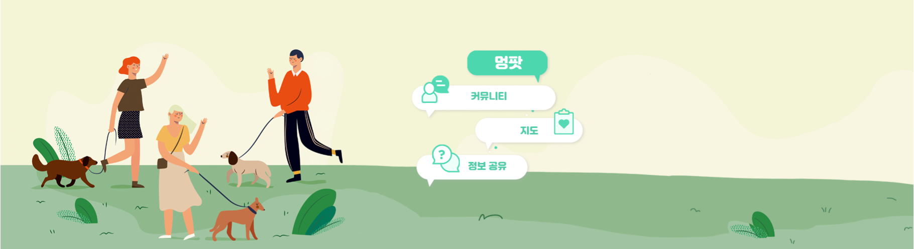

{% extends 'base.html' %}

{% block content %}

<div class="img_container">
    
</div>


<section class="container">
    {% for feed in feeds.all reversed %}
    <div>
        {% for photo in feed.photo_set.all%}
            <div class="home_img_container">
            
                <div class="img_figure">
                        
                </div>
                <a href="{% url 'detail' feed.id %}" style="text-decoration: none; margin:0px;">
                    <div class="img_figurecaption">
                        <h3 style="color:#28daaf;">{{feed.title}}</h3>
                        <p style="color:#28daaf;"> &#128204 {{feed.location}}</p>
                        <p style="color:#28daaf;"> &#128054 {{feed.writer}}</p>
                        <p style="color:#28daaf;"> &#128339 {{feed.created_at|date:'Y년 m월 d일 H시i분' }}</p>
                    </div>
                </a>
            </div>
        <div style="padding-top:20px;"></div>
        {% endfor %}
        </div>
{%endfor%}
</section>
{% endblock %}